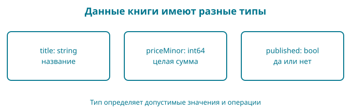

3. Название, цена и состояние книги
Мы уже умеем выводить две строки. Но цена будет участвовать в расчётах, а состояние публикации — определять доступность товара. Поэтому данные должны иметь подходящие типы.
Контрольная точка: examples/03-values. В своей рабочей папке замените main.go полным примером ниже. Цена учебная: это не объявленная стоимость будущей книги.
Образ: ценник с подписанными местами
Возьмите воображаемый ценник. Сверху оставьте место для названия, ниже — для цены, сбоку — для отметки «показывать покупателю». Не нужно каждый раз переписывать весь ценник, чтобы поменять сумму. Достаточно найти нужное место по подписи.
Имя переменной помогает найти значение в программе. Тип задаёт, какие значения и действия допустимы. Строка названия и целочисленная цена решают разные задачи: мы не станем складывать название с процентом скидки. Изменение переменной меняет её текущее значение; const объявляет константу, которой новое значение присвоить нельзя.
На бумаге можно зачеркнуть всё что угодно. Правила языка строже: компилятор проверяет допустимость операций. Поэтому образ ценника помогает связать имя с назначением, а точный ответ о типе мы получаем из Go. Нарисуйте три подписанных места и, не глядя в код, впишите в каждое пример значения. Где можно поставить false, а где оно нарушит вашу задумку?
Сразу целиком
package main
import "fmt"
func main() {
const currency = "KZT"
const minorPerUnit = 100
var priceMinor int64 = 249900
title := "Go: от первой строки до интернет-магазина"
published := false
fmt.Println(title)
fmt.Printf("Цена: %d.%02d %s\n", priceMinor/minorPerUnit, priceMinor%minorPerUnit, currency)
fmt.Println("Опубликована:", published)
published = true
fmt.Println("Опубликована:", published)
}
Запустите go run . после того, как попробуете предсказать две последние строки.
Go: от первой строки до интернет-магазина
Цена: 2499.00 KZT
Опубликована: false
Опубликована: true
Одна переменная участвовала в выводе дважды, и результат различается. Между вызовами мы поменяли её значение.
Значение и его имя
title := "..." создаёт переменную title и помещает в неё строку. Go определяет тип по правой части. Короткое объявление := применяется внутри функций.
published := false создаёт переменную типа bool. У логического типа два значения: true и false. Это удобно для вопроса с двумя ответами: опубликована книга или нет.
published = true меняет значение существующей переменной. Здесь стоит =, а не :=. Для повторного присваивания одному уже объявленному имени новое объявление не требуется.
var priceMinor int64 = 249900 — более подробная форма: мы явно выбрали тип int64. Это знаковое целое фиксированной разрядности. Тип int, который часто используют для счётчиков и индексов, зависит от архитектуры. Для представления сумм в модели магазина мы выберем фиксированный целый тип.
Если объявить переменную без начального значения, Go задаст нулевое: для целого числа — 0, для строки — пустую строку, для bool — false. Это правило языка, но не бизнес-решение. Не стоит считать нулевую цену автоматически разрешённой, пока магазин не определил правила бесплатных книг.
Константа не меняется
const currency = "KZT" задаёт константу. Ей нельзя присвоить другое значение во время работы программы. В этом примере валюта одна, поэтому она неизменна.
Это не означает, что любой магазин обязан иметь одну валюту. Когда появится несколько валют, код валюты станет частью данных, а правила пересчёта и округления придётся определить отдельно.
minorPerUnit задаёт число минимальных денежных единиц в основной для нашего учебного представления KZT: сто. Имя помогает увидеть смысл числа в выражении. Число 100 без имени могло бы означать и процент, и ограничение длины, и количество товаров.
Почему цена целая
Сумму 2499.00 KZT мы храним как 249900 минимальных единиц. Такой способ позволяет выполнять расчёты целыми числами и явно решать, что делать с дробной минимальной единицей.
Тип float64 полезен для приближённых вычислений, измерений и многих научных задач. Но многие десятичные дроби не представимы в двоичной форме точно. Для денежных правил нам важна воспроизводимая единица учёта, а не приближение, которое случайно выглядит правильно после печати.
Целое число тоже имеет предел. Сам по себе переход на int64 не защищает от переполнения при умножении. В главе 5 мы ограничим входную цену до расчёта и проверим границы тестами. Сумму и валюту позже объединим в модель, чтобы не перепутать единицы.
Как получилась точка и два нуля
В выражении priceMinor / minorPerUnit целочисленное деление даёт целую часть. В выражении с % получаем остаток. Для 249900 это 2499 и 0.
fmt.Printf печатает по шаблону. В нашем шаблоне:
| Запись | Значение |
|---|---|
%d |
Целое десятичное число |
%02d |
Целое число шириной не менее двух позиций, с ведущим нулём |
%s |
Строка |
\n |
Перевод строки |
Поэтому остаток 0 становится 00, а остаток 5 стал бы 05. В отличие от Println, Printf не добавляет перевод строки автоматически: он записан в шаблоне.
Этот вывод рассчитан на неотрицательную цену. Он не является готовым форматировщиком отрицательных сумм или всех валют. Мы отделим такие правила, когда появится необходимость.
Читаем новую запись по символам
| Запись | Как прочитать |
|---|---|
:= |
Объявить переменную и дать начальное значение; двоеточие вместе с равно — один оператор |
= |
Присвоить новое значение уже существующей переменной |
const |
Объявить константу |
var |
Объявить переменную |
int64, string, bool |
Имена типов, то есть допустимых видов значений |
249900 |
Целочисленный литерал без кавычек |
false, true |
Логические значения без кавычек |
, в Printf(...) |
Разделитель аргументов одного вызова |
/, % между числами |
Деление и остаток от целочисленного деления |
%d внутри кавычек |
Часть формата Printf, а не оператор остатка |
Одни и те же видимые знаки читаются по месту. % снаружи строки участвует в арифметике Go; %02d внутри строки получает смысл, когда Printf читает шаблон. Обратный слеш в \n начинает управляющую последовательность строкового литерала, обозначающую перевод строки; это не два печатаемых символа.

Проверка понимания. Покажите в примере присваивание, которое изменяет данные, и место, которое только задаёт вид вывода. Если % пока означает для вас одно и то же в обоих местах, перечитайте разбор цены.
Разминка
Предскажите. Как будет выглядеть цена при priceMinor = 105?
Заполните. Для изменения опубликованной книги на черновик используйте published ___ false.
Почините. Кто-то написал priceMinor = "249900". Почему это не то же самое, что число 249900?
Задание
Обязательное. Установите цену 350050. Программа должна напечатать Цена: 3500.50 KZT. Вторая строка состояния должна оставаться Опубликована: true.
На своих данных. Возьмите положительную цену, у которой последние две цифры — 05, и предскажите вывод перед запуском.
По желанию. Попробуйте присвоить константе currency другое значение. Прочитайте ошибку и отмените изменение.
Скажите своими словами
Чем отличается объявление от присваивания? Почему сумма без валюты неполна? Почему целый тип не освобождает нас от проверки диапазона?
Ответы
105 минимальных единиц даст 1.05 KZT. Для присваивания нужен =. Значение в кавычках имеет строковый тип, а priceMinor объявлена целой: это несовместимые типы для прямого присваивания.
В обязательном задании меняется только начальное значение цены. Не исправляйте шаблон вывода под конкретный ответ: он должен работать и для предыдущей цены.
У нашей книги появились данные трёх видов. Следующий шаг — принимать решение по этим данным, а не всегда печатать одно и то же.